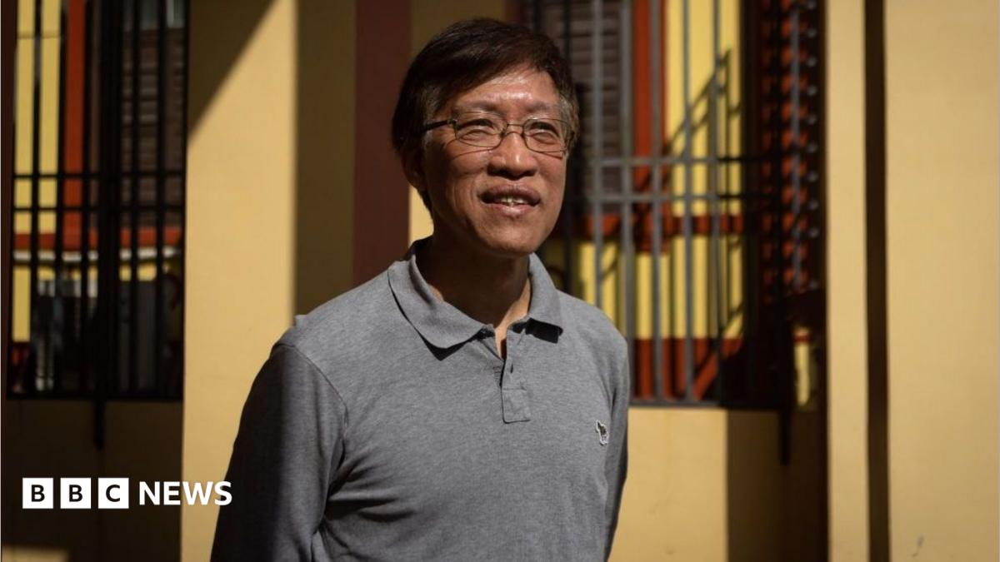

World · 06 Nov 2026
Macau jails pro-democracy campaigner in city's first national security case

Au Kam San was sentenced to 12 years and six months' jail for "subversion against the political power of the state".
Multiple independent publishers are reporting on the same development: Macau jails pro-democracy campaigner in city's first national security case.
The available reports place the development in the World category. The accounts were compared for agreement on the central event rather than simply shared names or broad topics.
One of the available reports describes the development this way: Au Kam San was sentenced to 12 years and six months' jail for "subversion against the political power of the state".
Readers should consult the linked source reports for additional context, updates and details that may change as the story develops.
Sources
This article was produced by the C. O. Eric AI Newsroom from the cited sources. It is published only after automated evidence and safety checks.